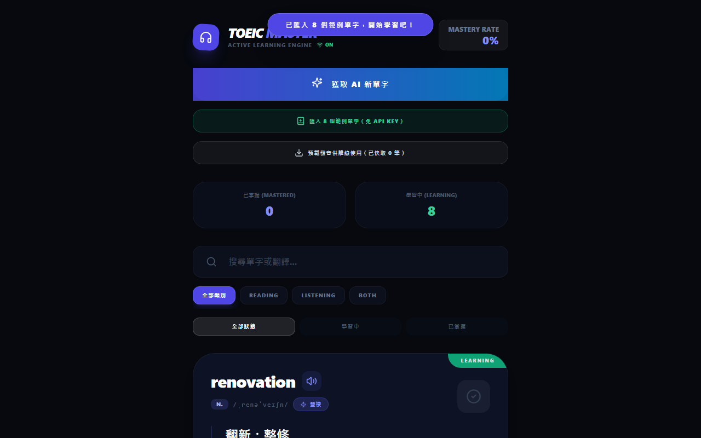
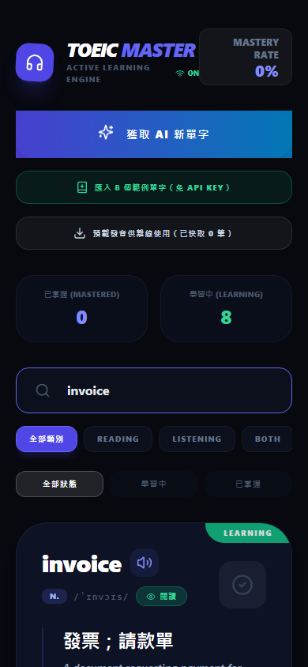

TOEIC Master：多益單字學習 App¶
TOEIC Master 是一個可以安裝到手機主畫面的多益單字 App，用 AI 幫你產生單字、用喇叭播放真人發音，學過的單字和發音檔都存在你的裝置裡，不需要網路也能繼續複習。
不需要帳號，不需要後端，開啟瀏覽器就能用。
原始碼： https://github.com/YuHsunWang/toeic-master
主要畫面¶

可以做什麼¶
- AI 產生 TOEIC 單字：輸入 Gemini API Key 後一鍵取得多益核心單字，含中文意思、英文解釋、例句、音標與詞性。
- 免費試用：沒有 API Key？點一下即可匯入 8 個內建範例單字，馬上體驗所有功能。
- 發音播放：每個單字和例句旁邊都有喇叭按鈕，點一下就能聽發音。
- 離線發音：可以預先下載發音檔，之後關掉網路也能播放高音質發音。
- 搜尋單字：支援英文單字或中文翻譯搜尋，快速找到想複習的字。
- 類型篩選：按 Reading、Listening、Both 篩選，針對弱項集中練習。
- 學習進度追蹤：把學熟的字標記為「已掌握」，首頁顯示掌握率讓你看見進步。
- 安裝成手機 App：支援 PWA，可以加到手機主畫面，跟一般 App 一樣開啟。
開始使用¶
方法一：不需要 API Key（馬上試）¶
- 開啟 App 網址（或 clone 後本機執行）。
- 點「匯入 8 個範例單字（免 API Key）」。
- 單字立刻出現，可以開始瀏覽、播放發音、標記已掌握。
方法二：用 AI 產生單字¶
- 到 Google AI Studio 取得免費 Gemini API Key。
- 開啟 App，在頁面上方輸入 API Key。
- 點「獲取 AI 新單字」，等幾秒鐘，新單字就會出現。
- 重複點擊可以持續累積單字庫，App 會自動避免重複。
本機執行（開發者）¶
git clone https://github.com/YuHsunWang/toeic-master.git
cd toeic-master
npm install
cp .env.example .env.local # 填入你的 Gemini API Key
npm run dev
操作說明¶
首頁一覽¶
首頁分成三個區域：
上方工具列
- 「獲取 AI 新單字」：呼叫 AI 新增單字
- 「匯入範例單字」：不需要 API Key 也能試用
- 「預載發音」：先下載發音檔，之後離線也能聽
學習統計
顯示「已掌握」和「學習中」的數量，以及整體掌握率。
篩選列
- 類型篩選：全部 / Reading / Listening / Both
- 狀態篩選：全部 / 學習中 / 已掌握
單字卡¶
每張單字卡包含：
| 欄位 | 內容 |
|---|---|
| 單字 | 英文粗體 |
| 發音 | 點 🔊 播放 |
| 音標 | /IPA 標記/ |
| 詞性 + 類型 | N. / ADJ. … + 閱讀/聽力 |
| 中文意思 | 簡潔翻譯 |
| 英文解釋 | 英英釋義 |
| 例句 | 附 TTS 發音 |
右上角綠色「LEARNING」標籤代表還在學習中；點右側圓形按鈕即可標記為已掌握。
搜尋與篩選¶
搜尋框支援：
- 英文單字（如
invoice） - 中文翻譯（如
發票）
輸入後即時篩選，不需按 Enter。
類型篩選讓你只顯示特定類型的單字，專攻弱項：
- Reading：閱讀測驗常考字
- Listening：聽力測驗常考字
- Both：閱讀和聽力都會出現

標記已掌握¶
學熟一個字之後，點單字卡右側的 ✓ 圓形按鈕，卡片會變暗並切換到「已掌握」狀態，首頁的掌握率也會同步更新。
想重新練習時，切換狀態篩選到「已掌握」找到它，再點一次按鈕即可恢復「學習中」。
發音功能¶
App 有三層發音：
- 已預載的高音質發音（Gemini TTS）：點喇叭立刻播放，完全不需要網路。
- 即時 Gemini TTS：有網路、有 API Key 時自動使用，發音後自動存到裝置備用。
- 瀏覽器內建語音：沒有網路或 API Key 失效時的備用方案。
建議
連上網路後點「預載發音供離線使用」，把現有單字的發音一次下載好，之後就可以完全離線複習。
離線使用¶
安裝成 PWA（或只要開過一次 App），即使手機切到飛航模式也能：
- 開啟 App
- 瀏覽所有已儲存的單字
- 搜尋與篩選
- 播放已預載的發音
- 標記已掌握 / 學習中
安裝到手機主畫面¶
- 用 Safari 開啟 App 網址。
- 點下方工具列的「分享」圖示（方框加箭頭）。
- 選「加入主畫面」。
- App 圖示出現在主畫面，點開就像一般 App。
- 用 Chrome 開啟 App 網址。
- 點右上角三點選單。
- 選「新增至主畫面」或「安裝應用程式」。
- 確認後圖示出現在主畫面。
PWA 需要 HTTPS
安裝 PWA 需要 HTTPS 連線，本機 localhost 開發環境也支援。HTTP 網址無法安裝。
自己部署¶
這是純前端靜態網站，build 完直接上傳 dist/ 目錄即可：
npm run build
# 發布 dist/ 目錄到任何靜態主機
支援的平台：Vercel、Netlify、Cloudflare Pages、GitHub Pages，或任何可以放靜態檔案的地方。